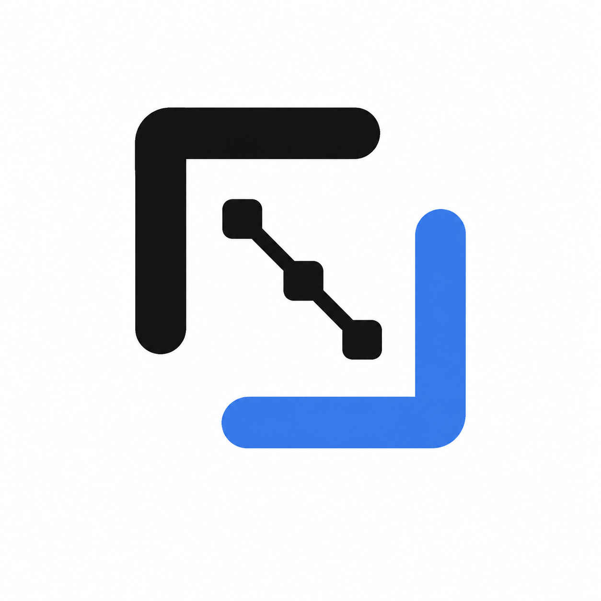

仟流智算 2.0 · Stage 02开发计划重基线进度 · 2026-08-12
DEVELOPMENT PLANNING
done把确认原型转成可执行计划
Stage 02 已收口；产品编码尚未开始，Stage 03／W20-01 仍为 todo。
六组检查
只检查受 PC-20260812-03 影响的开发计划合同。
三份权威成果
计划、工程规则、执行基线必须能被新会话直接读取。
| 成果 | 权威路径 | 状态 | 当前结论 |
|---|
唯一下一动作
执行基线已切到 Stage 03 / M20-0 / W20-01 / todo；创建 worktree／branch 仍需 Owner 单独授权。
权威变更：PC-20260812-03 · 当前没有产品代码完成事实